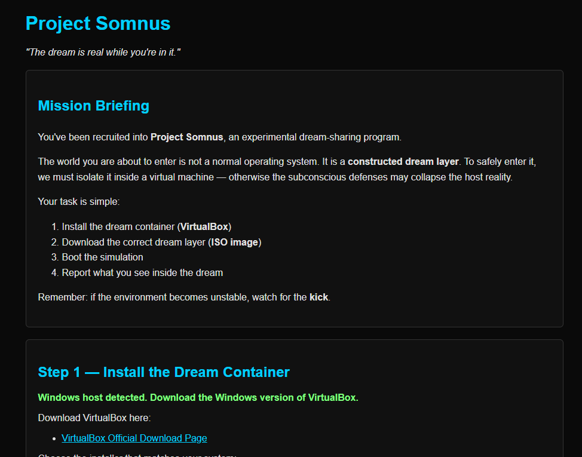

<!-- .slide: data-state="front hide-controls" --> <div id="title">Lab on Virtual Machines</div> <div id="subtitle">Data Privacy and Security</div> <div id="date">Data Science and Management (DASMA)</div> --- ## Virtual Machines baseline <div class="content-center"> **Virtual Machines (VMs)** are a virtualization technology that allows developers and IT teams to run multiple operating systems on a single physical machine, each with its own virtualized hardware, providing isolated and consistent environments across different host systems. <br/> </div> --- ## Main Virtual Machines concepts <div class="content-center"> <div class="fragment" data-fragment-index="1"> - **Hypervisor**: Software that creates and manages VMs by abstracting physical hardware, e.g., Type 1 (bare-metal) or Type 2 (hosted). - **Guest OS**: The operating system installed inside a VM, which runs independently of the host OS. - **Isolation**: Each VM operates in a sandboxed environment, preventing interference with other VMs on the same host. - **Resource Allocation**: VMs share physical resources (CPU, memory, storage) of the host, which can be allocated dynamically or fixed per VM. <br/> </div> </div> --- ## VirtualBox <div class="content-center"> <div class="cell-center"> <img src="https://upload.wikimedia.org/wikipedia/commons/d/d5/Virtualbox_logo.png" style="width: 80%;"> </div> <br/> <div class="fragment" data-fragment-index="0"> - **Open Source:** The VirtualBox hypervisor is released under the GNU GPL v2 license, allowing free use, modification, and distribution. - **Cross-Platform:** Works seamlessly on Windows, macOS, Linux, and Solaris hosts. - **Snapshots:** Lets you save the current state of a VM and revert back anytime, making testing and experimentation safe and easy. - **Safe to Experiment:** You can install and test other operating systems without affecting your main system or data. </div> </div> --- <!-- .slide: data-state="break-blue hide-controls" --> # MKISO <div class="content-center"> Virtual Machines Challenge 01 </div> --- ## MKISO - Reconnaissance <div class="content-center"> <div class="cell-center"> <p></p> </div> <br/> What can we observe? The challenge... - let you download an ISO file; - require you to install a virtual machine and retreive the flag; </div> --- ## MKISO - Hypothesis <div class="content-center"> <div class="fragment" data-fragment-index="1"> The student needs to learn how to install an operating system: </div> <div class="fragment" data-fragment-index="2"> 1. Create a VM and mount the correct ISO </div> <div class="fragment" data-fragment-index="3"> 2. Keep GRUB with the default "Automated Install" option (otherwise the flag will not be in the system) </div> <div class="fragment" data-fragment-index="4"> 3. Follow the steps </div> </div>